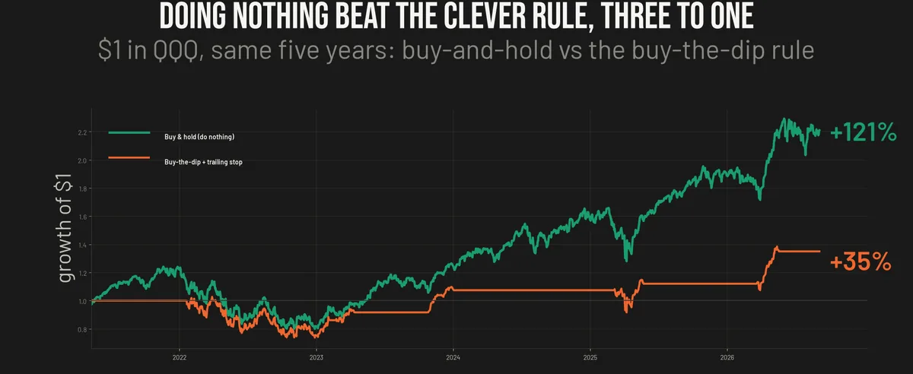
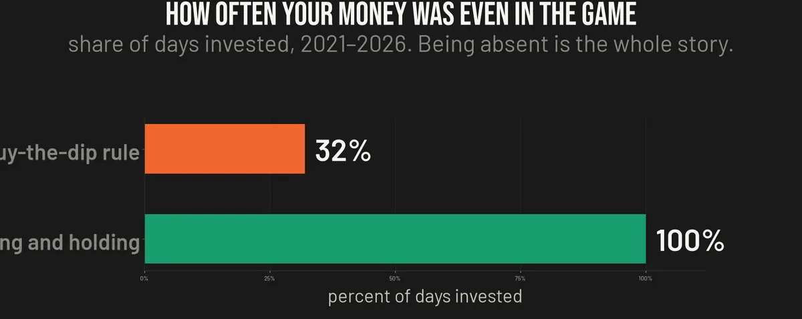

Does Buying the Dip Work? 5 Years Against Doing Nothing
BEATEN BY DOING NOTHING.
A forum rule says to buy QQQM when it closes below its 200-day EMA, then trail out with a 2% stop once it recovers. Tested on QQQ from 2021-05 to 2026-09, it returned +35.0% versus +121.0% for buy-and-hold, with a MAR of 0.21 and Sortino of 0.62 against 0.45 and 1.13. It won 83% of its trades (5/6) with a 3.46 profit factor, yet was in the market only 32% of the time and missed most of the climb. One 2022 entry sat 306 days at -14% before the stop could even arm. The shallower drawdown (-28.2% vs -35.6%) cost about two-thirds of the return.


The receipts
The code and result files behind every number on this page.
Browse the receipts for this episodeRelated autopsies
- Does a MACD Volume Filter Work? 6 Years TestedVerdict: A THROTTLE, NOT AN EDGE.
- Does the RSI 2 Strategy Work? A 67% Win Rate, TestedVerdict: NOT AN EDGE.
- Does Buying When the VIX Tops 35 Work? 25 Years TestedVerdict: HALF-TRUE.